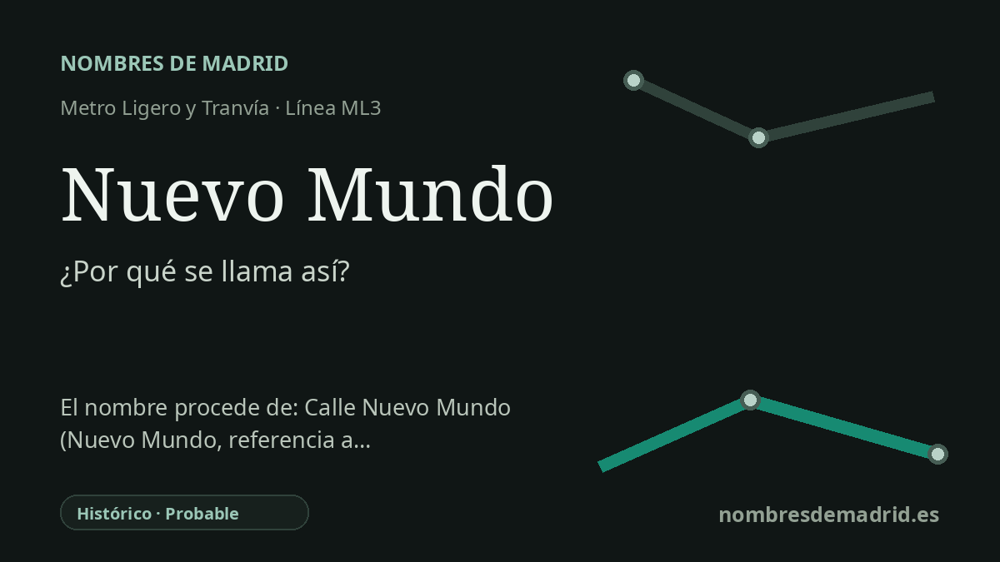

Publicado el · Investigación de Nombres de Madrid · Cómo verificamos cada origen · 6 fuentes consultadas
Respuesta rápida
Nuevo Mundo recibe su nombre de la Avenida Nuevo Mundo, en Boadilla del Monte. El nombre de la avenida evoca el término histórico europeo para América, reforzado por calles cercanas dedicadas a Colón, Cortés, Pizarro, Orellana y otros personajes de la expansión ibérica.
La historia del nombre
La estación Nuevo Mundo toma su nombre de la vía a la que da servicio: la Avenida Nuevo Mundo de Boadilla del Monte. Metro Ligero Oeste describe la parada como una estación de la línea ML3 situada en la avenida homónima, próxima al IES Máximo Trueba y al CEIP Teresa de Berganza.
Las palabras significan «New World» o «Nuevo Mundo», una expresión histórica usada en la geografía europea para referirse a América después de los viajes atlánticos iniciados en 1492. Britannica señala que las cartas publicadas de Américo Vespucio ayudaron a popularizar la forma latina Mundus Novus, «Nuevo Mundo», para las tierras del otro lado del Atlántico.
El callejero de Boadilla aclara el contexto local. En esta parte del municipio y en la zona contigua de Valenoso aparecen calles llamadas Cristóbal Colón, Hernán Cortés, Francisco Pizarro, Diego de Almagro, Alonso de Ojeda, Francisco de Orellana, Pedro de Valdivia y Reyes Católicos, formando un conjunto visible de nombres vinculados a la exploración, la conquista y la expansión española de la Edad Moderna.
El nombre de transporte es moderno, aunque la expresión sea histórica. Metro Ligero Oeste inauguró su red ML2 y ML3 el 27 de julio de 2007; la ML3 circula entre Colonia Jardín y Puerta de Boadilla, y Nuevo Mundo quedó como una de las paradas que dan servicio al nuevo eje residencial de Boadilla.
El dato mejor verificado es la relación directa entre la estación y la avenida. La explicación más amplia, que la avenida forma parte de una temática americana o de la Era de los Descubrimientos, está fuertemente sugerida por el callejero oficial, pero requeriría un expediente municipal de denominación o un acuerdo plenario para quedar documentada por completo.